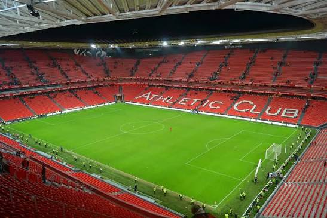
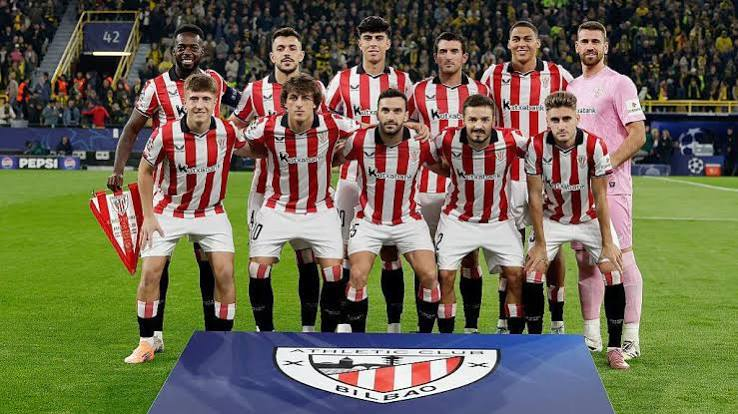

Founded
1898
Spain
Discover the history, stadium, legendary players, major trophies, records, and interesting facts about Athletic Club.
Introduction
Athletic Club, commonly known outside Spain as Athletic Bilbao, is a professional soccer club based in Bilbao in the Basque Country of Spain. Founded in 1898, the club has become one of the most historic teams in Spanish soccer. Athletic is recognized by its famous red and white striped shirts and strong connection with Basque culture.
Athletic plays its home matches at San Mamés in Bilbao. The current stadium opened in 2013 near the location of the club's original San Mamés stadium. The stadium is an important part of the club's identity and is known for the passionate atmosphere created by Athletic's supporters.
One of the most distinctive parts of Athletic's identity is its player-development philosophy. The club has traditionally built its teams around players who are connected to soccer in the Basque region. This approach has made youth development especially important to Athletic's success.
Famous players such as Telmo Zarra, José Ángel Iribar, Julen Guerrero, Andoni Zubizarreta, Fernando Llorente, Iker Muniain, Nico Williams, and Iñaki Williams have represented the club. Athletic's history and traditions have made it one of the most distinctive clubs in European soccer.

About the Club
Athletic Club was established in Bilbao near the end of the 19th century. Soccer had been introduced to the area through connections with British workers and Basque students who had experienced the sport while abroad. These influences helped soccer grow in Bilbao and contributed to the formation of Athletic.
Athletic quickly became successful in Spanish soccer. The club became a major force in the Copa del Rey and won several editions of the competition during its early history. Athletic was also one of the founding members of Spain's national league, La Liga, when the competition began in 1929.
Athletic holds a special place in Spanish soccer because it is one of only three clubs, along with Real Madrid and Barcelona, that have never been relegated from La Liga. Remaining in the top division for generations is especially impressive because of the club's unique approach to building its teams.
The club's philosophy places a major emphasis on developing and using players connected to the Basque soccer system. Instead of depending entirely on international transfers, Athletic has placed great importance on its youth academy at Lezama. The academy has produced many players who later became important members of the first team.
One of Athletic's greatest players was Telmo Zarra. The striker played for the club during the 1940s and 1950s and became Athletic's all-time leading scorer. Zarra was one of the greatest goalscorers of his era and remained La Liga's all-time leading scorer for decades before his league record was eventually surpassed.
Athletic enjoyed another major period of success in the early 1980s. Under manager Javier Clemente, the club won back-to-back La Liga championships in 1982-83 and 1983-84. Athletic also won the Copa del Rey in 1984, completing a league and cup double.
The club later experienced a long wait for another major trophy. Athletic reached several cup finals but repeatedly finished as runner-up. In 2015, the club defeated Barcelona to win the Spanish Super Cup, ending a long trophy drought.
Another unforgettable moment arrived in 2024. Athletic defeated Mallorca in a penalty shootout in the Copa del Rey final, winning the competition for the first time in 40 years. Thousands of supporters celebrated the victory, showing the strong relationship between the club, the city of Bilbao, and the wider Basque community.

Club Details
1898
Bilbao, Spain
San Mamés
Red, White, and Black
Club Record
Telmo Zarra is Athletic Club's all-time leading goalscorer with 335 official goals. The Spanish striker played for Athletic from 1940 to 1955 and became one of the greatest goalscorers in the history of Spanish soccer.
Zarra also became famous for his performances in the Copa del Rey and La Liga. His goalscoring achievements made him a legendary figure at Athletic and one of the most important players in the club's history.
Success
Legendary Players
Athletic Bilbao has produced many legendary players, but no player has won the men's Ballon d'Or while representing the club.
Athletic's history is instead strongly connected with developing players through its own system and creating club legends who have spent important parts of their careers representing the team.
Did You Know?